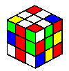
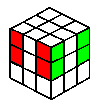
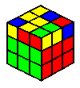
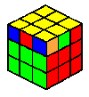
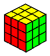

My system for solving Rubik's cube
Winter 1996/97: The system described here enabled me to win the First Czechoslovak Championship in Rubik's Cube, which took place in April 1982.
When I was at my best, I routinely solved the cube in an average time of 17 seconds. At that time, I was actively using more than
100 algorithms, but the basic required minimum is 53 algorithms. Before I go on and describe the details of my system,
I would like to express my thanks to Mike Pugh who retyped the algorithms from my old notebook to HTML and added nice graphics.
His enthusiasm helped me to find the cube no less interesting than some 15+ years ago when I met it for the first time. Special
thanks belong to Mirek Goljan, my 1982 finale rival, who kindly provided his enormous
collection of algorithms as it appears here today.There are a number of diferent systems suitable for speed cubing, but all can
be roughly divided into two main categories: corners-edges and by-layers. My system belongs to the second category even though the
first two layers are really formed at the same time rather than in sequence. The basic set
of algorithms consists of 53 algorithms for the last layer and a couple of simple moves for the second layer together with a lot
of experience. Most of the algorithms were developed by myself during the time period between the summer 1981 and the spring of 1983.
However, other speed cubists, most noticeably Mirek Goljan, have also significantly
contributed with important moves. Here is my system in a nut shell:
| Action description |
Average
number
of moves |
Time | Result |
|
Place the four edges from the first layer | 7 |
2 sec. |  |
Place four blocks
each consisting of one
corner from the first layer and a corresponding
edge from the second layer.
| 4 x 7 | 4 x 2 sec. |
 |
Simultaneously orient the corners AND edges
so that the last
layer has the required color
(one algorithm out of 40). | 9 |
3 sec. |  |
Simultaneously
permute the 8 cubes in the
last layer without rotating corners or flipping
edges (one algorithm out of 13). |
12 | 4 sec. |  |
| TOTAL | 56 | 17 |
 |
Unique features
One of the unique features of this system is that the last layer is always solved
using two algorithms of an average length of 9 and 12, which is very efficient. The average lengths are based on frequencies
with which various orientations and permutations occur and
on the length of algoritms for each position. Another interesting feature is that for the first two layers no lengthy algorithms
are needed and you can use your intuition and utilize the specifics of the particular initial state and subsequent states of
the cube.
The first two layers
In an attempt to make this description complete, I supplied several
algorithms which can help you solve the first two layers. Although most of the algorithms will be
obvious to an experienced speed cubist, some of them are less trivial and are in my opinion very valuable. In addition to that, one should
always try to use the specifics of any given state of the cube rather than blindly apply the algorithms. For example, when two or
three corners are already correctly placed, it may be advantageous to keep the last corner free and insert all middle cubes using
the free corner. Actually, some speed cubists use this approach as their default. Alternatively, when accidentaly (or intentionally)
two or more middle cubes happen to be positioned correctly, one can place the corners from the first layer via the free middle edge(s).
All these moves and a lot of practice should enable you to solve the
first two layers in about 10-12 sec. Of course, this requires a lot of practicing, but let us say that 15-20 sec. will be realistic
for most folks.
Because I was receiving a lot of requests for "additional hints" and advice for the middle layer, I decided to include another section
with practical advice for solving the middle layer. Here are a few examples of how
I think out loud when doing the middle layer. I hope this will help you to master the system faster!
The last layer
Some systems for solving Rubik's cube "by-layers" divide the solution
of the last layer into four stages: orient edges, place edges, orient corners, place corners. It is possible to group together two
and two stages to speed up the process. It seems natural to orient and place edges in one move and then orient and place corners in
the second one. However, this approach has one big disadvantage - it is very difficult to recognize various positions quickly. A
better approach is to orient edges and corners at the same time and place all of them simultaneously. Convince yourself that there
are 41 different orientations of the cubies in the last layer, and 14 different
permutations of those 8 cubies. Here, we do not count symmetric
positions or inverse (backwards) positions as different because they can be solved using one
algorithm. Different orientations are easily recognizable by patterns formed by the color of the last layer and a brief look at
the sides of the cube. There are two patterns "C", four "I", two "T", etc. Most of the permutations are also easily recognizable.
Given an average twisting speed of three moves per second, one can solve the last layer in 3 + 4 seconds (based on the average
number of moves). In theory, we could come up with a much larger system of algorithms which would enable us to solve the last
layer in one algorithm. However, the number of algorithms one would need to learn is 1211.